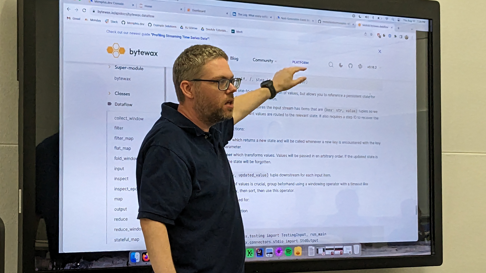

Dashboards with Live Updates for Real-Time Analytics


Next generation data infrastructure with streaming capabilities are enabling insights to be delivered in real time. In this talk, we’ll look at an example of a sales dashboard with live updates. The dashboard will monitor a message broker for sales events and update graphs and metrics as new events arrive. Through this example, we’ll introduce the basics of working with a streaming data platform, compare the streaming approach with more traditional daily batch jobs, and discuss patterns for calculating statistics from streaming data. The talk will include discussion of the implementation and review of Python code examples.
RJ Nowling is an open-source developer advocate for Memphis.dev, creators of the next-generation Memphis.dev message broker, and an associate professor of Computer Science at the Milwaukee School of Engineering (MSOE). RJ earned his Ph.D. in Computer Science & Engineering from the University of Notre Dame with research in numerical simulations for computational chemistry and applications of machine learning and statistical algorithms to genomics. In between his Ph.D. and faculty position, RJ was a software engineer at Red Hat with a focus on open-source scalable data-processing infrastructure and data science engineer at AdRoll (now NextRoll) with a focus on building and maintaining ML production systems for digital advertising. RJ teaches courses on machine learning production systems and data science.
Pizza will be provided by our sponsor this month, Memphis.dev. Memphis.dev is developing a next-generation alternative to traditional message brokers. A simple, robust, and durable cloud-native message broker wrapped with an entire ecosystem that enables cost-effective, fast, and reliable development of modern queue-based use cases.